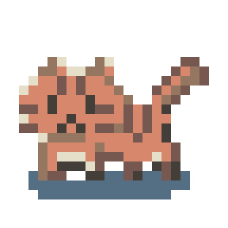

NOW PLAYING
たのしい！にくねこの日常！
しいたけにおごってもらっちゃった
刺身にたんぽぽをのせて、お給料をもらった猫とおにく。
テレビの演説を聞いて、今度は株式投資も始めてみたけれど……。
働いて、投資して、最後は？
おにくとねこ、しいたけたちの、ちょっとおかしな毎日。

しいたけにおごってもらっちゃった
刺身にたんぽぽをのせて、お給料をもらった猫とおにく。
テレビの演説を聞いて、今度は株式投資も始めてみたけれど……。
働いて、投資して、最後は？
ほかの動画やゲームの紹介も、公式チャンネルで。
動画はYouTubeの埋め込みプレーヤーを使用しています。プライバシーポリシー